为日常与折腾而生
稳定、好看、好用，且带着 XHC 生态的一键直达。
Debian 12 底座
以 Debian 12 (bookworm) 为基，软件丰富、更新稳健，社区资料随手可得。
XFCE 桌面
轻量流畅的 XFCE 4 + 暖橙主题，老机新机都顺手，不花哨不卡顿。
暗色启动动画
自绘 Plymouth 暗色主题，开机即见 XHC 弧光与暖橙进度条。
Calamares 安装器
图形化安装向导，抹盘 / 手动分区、设账号、一键装好硬盘系统。
Secure Boot 支持
内置 shim + 签名 GRUB，新版带安全启动的笔记本也能直接引导。
UEFI + 传统 BIOS
混合镜像双启兼容，新主板与老机器同一张盘通吃。
真实硬件固件
启用 non-free-firmware，网卡 / 显卡 / 各类 WiFi 装完即用。
中文开箱即用
fcitx5 输入法 + Noto 中文字体，首次进入即为中文环境。
XHC 生态直达
桌面预置 XHC 博客 / 云盘 / 浏览器 / 域名平台的快捷入口。
Live 先试后装
不写入硬盘也能进完整桌面试用，满意了再点安装。
技术规格
获取与安装
一张 U 盘，几分钟装好。两种方式任选。
取得镜像
下载官方 ISO，或用仓库里的构建脚本在本机 Debian / WSL2 一键生成。
写入 U 盘
用 Ventoy、Rufus 拷贝，或 dd 直写。推荐 Ventoy 多 ISO 共存。
从 U 盘启动
实体机选择 U 盘启动，进入 Live 桌面先试用。
图形化安装
桌面双击「安装 XHCOS 到硬盘」，跟随 Calamares 向导完成。
重启即用
拔出 U 盘重启，登录 xhc 账户，开始你的 XHCOS。
自己构建 ISO
仓库已附带完整 live-build 工程，在有网络的环境执行：
# 在 Debian 12 / WSL2-Debian 中（需 root）
sudo apt-get install -y live-build debootstrap xorriso squashfs-tools
git clone https://github.com/SanhanaYuzu/xhcos.git
cd xhcos/iso
sudo ./build-iso.sh
# 产物：xhcos-1.0.0-amd64.iso注：官方预构建 ISO 镜像正在打包发布中，发布后将在本页与项目仓库提供下载。当前可先按上方脚本自行构建。
关于品牌 · 三花工坊
XHCOS 由独立开发者品牌 Sanhana Studio（三花工坊）打造。品牌虚拟形象是一只三花猫娘「Sanhana」——三花色块、柚子黄点缀、代码与像素彩蛋，气质是日系手作 + 技术宅的独立开发者味道。
系统代号 Calico（三花）即来源于此。每一处暖橙与弧光，都是三花工坊的视觉签名。

BUILD BY NT GROUP